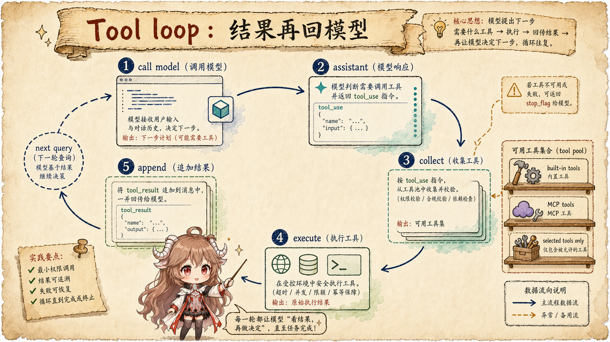
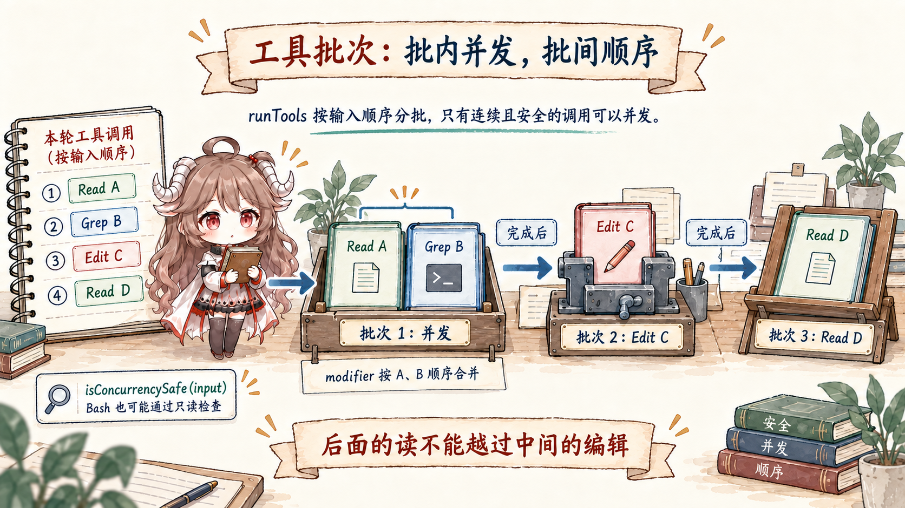
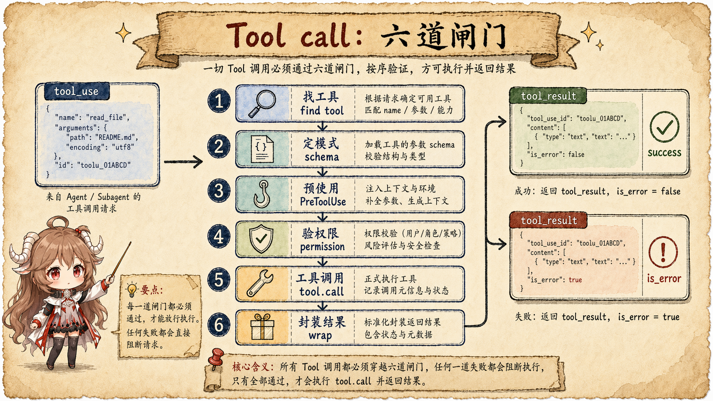
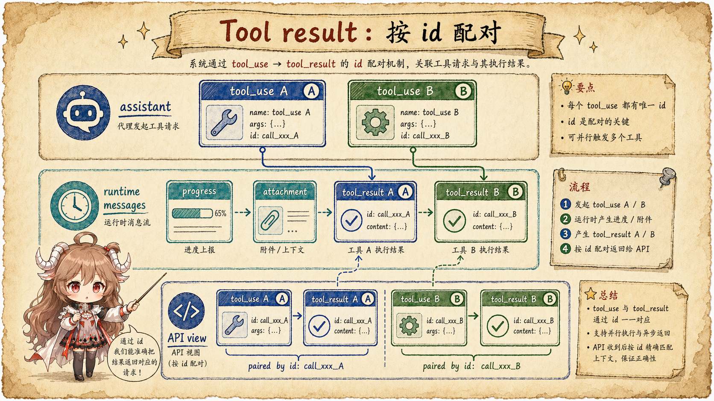

上一篇讲上下文时，我们反复说“模型下一轮看见什么”。
工具调用就是最容易改变这件事的地方。模型先说“我想读这个文件”或者“我想执行这条命令”，
但它并不直接碰本地文件系统。Claude Code 会把这次提案交给一条运行时链路：
先验明工具和输入，再经过 hook、权限、并发策略和结果包装，最后把事实写成下一轮模型能理解的
tool_result。
这就是这一篇的核心：工具不是模型的手脚，而是 runtime 暴露给模型的一组受控合约。 模型只拥有“提出调用”的能力；本地副作用的所有权在 Claude Code 客户端。
先把结论放在前面：Claude Code 的工具链路可以分成四层。
REPL 装配可见工具和 ToolUseContext；query() 在模型流里收集
tool_use；runTools() 负责并发/串行调度；runToolUse()
负责单个工具的查找、校验、权限、hook、执行和 tool_result 包装。
阅读契约：这篇只追三组边界：模型提出的 tool_use 和客户端实际副作用的边界；
多个工具调用之间的并发/串行边界；UI 进度消息、transcript 记录和 API-bound tool_result 的边界。
读完应该能回答：为什么模型不能“直接执行命令”，为什么读操作可以并发而编辑类动作要串行，以及为什么工具失败也要回填成一条可见结果。
证据边界也先说清楚。产品层的工具调用契约来自 Anthropic tool use 文档 和 Messages API； 源码层来自 Rememorio/claude-code 公开镜像。 这个镜像不是 Anthropic 官方源码仓库，所以本文只把可见客户端源码写成直接事实；权限分类器、provider 内部工具提示词和服务端缓存行为，不从客户端代码里硬推。
这篇只回答五个问题：
- REPL 在进入
query()前，怎样决定这一轮模型能看到哪些工具？ query()为什么靠 content block 收集tool_use，而不是只信stop_reason？- 多个工具调用为什么有的能并发，有的必须串行？
- 单个工具从
tool_use到tool.call()中间要过哪些闸？ tool_result为什么不是终端输出，而是下一轮模型请求里的配对事实？
一、模型看到的是工具 schema，不是本地执行权
先从进入模型之前看起。普通交互回合在 REPL 里装配上下文。
getToolUseContext()
会从当前 store 里 fresh 读取工具、MCP clients、MCP resources、权限上下文和主循环模型。
这里特意不用闭包里旧的 tools / mcpClients，因为 MCP server 可能在渲染之后才连上，工具列表必须以当前 store 为准。
同一处返回的 ToolUseContext 很厚。
类型定义
里能看到，里面不只有 options.tools，还有 abort controller、file cache、app state getter/setter、
MCP 连接、commands、thinking config、进度更新、通知、内容替换状态、已发现技能等字段。
换句话说，工具不是一组裸函数；工具调用时会带着一份“这一轮运行环境”。
真正进入主循环前，REPL 会先取系统提示词、用户上下文和系统上下文，再调用
query()。
这一步把 messages、systemPrompt、userContext、canUseTool
和 toolUseContext 一起交进去。模型能看到的是工具 schema 和说明；本地执行权仍在 runtime 手里。
shape-level:
REPL turn =
messages
+ renderedSystemPrompt
+ userContext / systemContext
+ ToolUseContext(options.tools, mcpClients, permission state)
+ canUseTool(...)
model-visible request =
messages + tool schemas + system prompt
runtime-only state =
AbortController, store, readFileState, permission queues, hooks二、query() 收集的是 tool_use block
进入 query() 后，工具调用不会靠一个“模型说要用工具”的总开关来判断。
源码在每轮 setup 里先建立三个容器：
assistantMessages、toolResults、toolUseBlocks。
注释还专门提醒：stop_reason === 'tool_use' 不可靠；真正的 loop-exit 信号，是流式 assistant message 里是否出现
tool_use content block。

query() 不把一次模型响应当终点；只要 assistant 内容里出现 tool_use，工具结果就会成为下一轮输入。2.1 流式阶段：先产出 assistant，再记下申请单
流式响应回来时，
query()
先把 assistant message yield 给上层，再从 message.message.content 里筛出所有
tool_use block，放进 toolUseBlocks，并把 needsFollowUp 置为 true。
如果 streaming tool execution 打开，同一段代码还会把这些 block 交给 StreamingToolExecutor。
这一步看起来小，其实很关键。Claude Code 没有只看 stop reason，也没有把工具调用散落在 UI 组件里处理；
它把“模型刚才提出了哪些工具申请”集中收在 query() 的局部账本里。
2.2 执行阶段：streaming executor 或 runTools()
模型流结束后，如果没有需要 follow-up 的工具调用，query() 就可以完成这一轮。
但只要 toolUseBlocks 非空，它会进入工具执行段：
query_tool_execution_start。
这里有两条路径：如果启用了 streaming executor，就消费 getRemainingResults()；否则把所有
toolUseBlocks 交给 runTools()。
不管哪条路径，产物都统一成 MessageUpdate。如果 update 里有 message，query()
会把它 yield 出去，同时通过 normalizeMessagesForAPI() 把它折成下一轮 API 需要的 user message。
如果 update 带着新的 context，query() 也会替换 updatedToolUseContext。
shape-level:
assistant:
content: [
{ type: "text", text: "I will inspect the file." },
{ type: "tool_use", id: "A", name: "Read", input: {...} }
]
runtime update:
message: user({
content: [
{ type: "tool_result", tool_use_id: "A", content: "..." }
]
})
next API view:
assistant(tool_use A)
user(tool_result A)三、runTools() 先判断能不能并发
多个工具调用不等于一个个按顺序跑。runTools() 的第一件事，是调用
partitionToolCalls()
把 tool_use 列表切成 batch。每个 batch 要么是多个连续的 concurrency-safe 调用，要么是一个非 read-only 的单独调用。

runTools() 保护的是副作用顺序：读类工具可以合并成并发批，可能改变状态的工具必须单独串行。3.1 并发只给“连续且安全”的工具
partitionToolCalls()
会先按工具名找工具，再用该工具的 input schema 解析输入，最后调用工具自己的
isConcurrencySafe(parsedInput.data)。只有解析成功、工具声明安全、并且前一个 batch 也是安全 batch 时，
当前调用才会被塞进同一个并发组。
这个逻辑比“Read/Grep 就并发，Bash/Edit 就串行”更稳一点：并发安全是工具按输入判断的，不是一个全局名字表。
如果 isConcurrencySafe 自己抛错，源码也会保守地把它当作不安全。
3.2 并发批会延后合并 context modifier
并发批内部通过
runToolsConcurrently()
调用 all(..., getMaxToolUseConcurrency())，默认最大并发来自环境变量，不设置时是 10。
但并发执行不等于同时改 runtime context。
源码会把每个工具产生的 contextModifier 先按 toolUseID 排队，等整个并发 batch 结束后，再按 block 顺序依次应用。
这是很典型的 agent runtime 设计：耗时的读可以并发，状态变更的提交顺序仍然要稳定。 如果一个并发 Read 和另一个并发 Grep 都带回读文件状态，最终合并必须可重放，而不是谁先返回谁先改。
3.3 串行批就是一边执行一边更新 context
非并发安全的 batch 会走
runToolsSerially()。
它对每个 toolUse 标记 in-progress，调用 runToolUse()，收到
contextModifier 就立即更新当前 context，最后再把这个 toolUse id 从 in-progress 集合里移除。
| 路径 | 源码行为 | 保护的东西 |
|---|---|---|
| concurrent batch | 连续的安全工具并发执行，modifier 先排队再按 block 顺序合并。 | 读操作吞吐量，以及可重放的 context 更新顺序。 |
| serial call | 一个工具执行完、context 更新完，再进入下一个。 | 文件编辑、shell、状态变更这类副作用的顺序语义。 |
| unknown / invalid | 不执行本地动作，直接生成 error tool_result。 |
让模型知道失败原因，同时避免越过客户端工具边界。 |
四、单个工具调用要过六道闸
真正执行单个工具的是
runToolUse()。
这段代码很适合作为“工具是 runtime 合约”的证据：它做的第一件事不是调用工具，而是用工具名在当前可见工具池里找工具。

tool_use 只有穿过查找、schema、hook、权限和执行包装，才会成为真实本地动作。4.1 找不到工具，也要回一条 tool_result
runToolUse() 先在 toolUseContext.options.tools 里找工具。
如果找不到，还会在基础工具集合里查一次 deprecated alias；但只有 alias 命中才会回退。
如果最终没有工具，源码会创建一条 user message，里面放
is_error: true 的 tool_result，
告诉模型“没有这个工具”。
这比直接抛异常更适合 agent loop。因为模型刚刚发出了一个不可执行申请，下一轮应该知道失败原因，然后调整策略。 如果客户端只是中断，模型既不知道失败发生在哪里，也无法自我修正。
4.2 schema 和工具自身校验先挡住坏输入
找到工具后，checkPermissionsAndCallTool() 会先用工具的
inputSchema.safeParse(input)
做 Zod 校验。失败时同样返回 error tool_result。
如果 deferred tool 的 schema 没有被送进模型视图，还会构造一个 schema-not-sent hint，让模型先通过 tool search 重新加载工具。
schema 通过之后，工具自己的
validateInput()
还能继续做语义级校验。也就是说，工具输入有两层门：通用结构先过，工具自己的业务规则再过。
4.3 PreToolUse hook 在权限之前改变或阻断调用
在真正问权限之前，Claude Code 会先跑
runPreToolUseHooks()。
hook 可以发进度消息，可以提供额外 context，可以给出 permission result，可以更新 input，也可以直接 stop。
如果 hook stop，runtime 会把这次调用包装成一个停止型 tool_result 返回。
这解释了为什么 hook 不是“执行后的通知”。在工具调用这条链路里，PreToolUse 是副作用真正发生前的拦截点， 它站在权限判断之前，能影响后续权限和执行输入。
4.4 权限决定是执行前最后的用户信任边界
权限判断本身留到下一篇细拆，这里先看它在工具链路里的位置。
checkPermissionsAndCallTool() 在 hook 之后调用
resolveHookPermissionDecision(...)，
最终得到 allow、deny 或 ask 的结果。
REPL 侧的 useCanUseTool()
会把配置规则、自动模式、交互弹窗和权限队列收在一个函数边界里。
这层保护的是用户信任，而不是模型能力。模型可以提出“改文件”，但用户或配置可以拒绝； 拒绝不是异常退出，而是会回到模型可见的结果里，成为下一步推理的事实。
五、tool_result 是配对事实，不是终端输出
工具执行完成后，Claude Code 要把结果写回两类读者：人类要在 UI 里看到进度、附件、错误和摘要；
模型要在下一轮 messages 里看到和原 tool_use id 配对的 tool_result。
这两个读者不能混成一个“stdout 字符串”。

tool_result 的核心不是显示格式，而是和 tool_use_id 配对后进入下一轮 API view。5.1 进度消息可以很多，API 结果必须配对
streamedCheckPermissionsAndCallTool()
用一个 stream 把工具进度和最终结果合成同一个 async iterable。工具执行中可以不断产生 progress message，
UI 可以即时显示；但最终进入 API 的，仍然要经过 normalizeMessagesForAPI() 过滤成 user message。
query() 在收 tool update 时也做了同样的边界处理：
先 yield update.message 给 UI，再 normalize 进 toolResults。
所以别把屏幕上看到的每一条进度都理解成模型下一轮能看到的内容。UI view 和 API view 仍然分层。
5.2 成功和失败都要成为下一轮事实
未知工具、abort、schema 错误、工具自身校验失败、hook stop、执行异常，源码里都倾向于生成
tool_result。成功时结果也会被包装成 tool_result；如果工具返回图片，代码还会把文本型
tool_result 和 image block 分开处理，避免带 is_error 的工具结果里混入非文本 block。
这个设计让 agent loop 保持连续：不管工具成功还是失败，下一轮模型都能看见上一轮发生了什么。 如果失败不进消息，模型就会像丢了一段现场记录；如果成功只留在 UI，模型也无法利用刚刚读到的文件内容继续推理。
5.3 工具摘要是补充，不替代 tool_result
工具 batch 完成后，query() 还有一段可选的
tool use summary 逻辑。
它会在 feature gate、非 abort、非 subagent 等条件满足时，提取工具 id 和工具信息，生成给 UI 或后续链路使用的摘要。
但摘要不是 provider tool-use 契约本身。真正让下一轮模型知道工具发生了什么的，仍然是与
tool_use_id 配对的 tool_result。
六、几个常见误读
工具链路看完以后，可以把几个容易混淆的说法压成一张表。
| 误读 | 更准确的说法 | 源码证据 |
|---|---|---|
| 模型在执行命令 | 模型只产生 tool_use；客户端 runtime 决定是否执行。 |
query() 收集 block，runToolUse() 再查找和校验工具。 |
| 工具列表就是函数列表 | 工具列表只是模型可见 schema；调用时还依赖 ToolUseContext。 |
ToolUseContext 包含 app state、MCP、file cache、权限和通知等状态。 |
| 多个工具按模型输出顺序逐个跑 | 连续安全工具可并发，副作用工具串行，context modifier 按稳定顺序合并。 | partitionToolCalls() 和 concurrent/serial 两条执行路径。 |
| 权限只是 UI 弹窗 | 权限是执行前的信任边界，hook 也可能先给出或改变权限结果。 | runPreToolUseHooks() 在 resolveHookPermissionDecision() 之前。 |
tool_result 是终端输出 |
它是和 tool_use_id 配对的 user message，进入下一轮 API view。 |
query() 对 update.message 做 normalizeMessagesForAPI()。 |
所以读 Claude Code 的工具源码，不该只问“有哪些工具”。更重要的问题是： 工具 schema 什么时候进入模型视图，工具申请什么时候被收集，副作用什么时候真正发生，失败怎样回到模型， 以及哪些状态只能留在客户端 runtime。
下一篇就沿这里的权限闸继续往下看：同样一个 Bash 或 Edit，
为什么有时直接 allow，有时直接 deny，有时要把用户拉回到决策链路里。
参考源码与文档
- Rememorio/claude-code 公开镜像
- Anthropic tool use overview
- Anthropic Messages API
- REPL.tsx：getToolUseContext
- REPL.tsx：turn setup and query call
- Tool.ts：ToolUseContext
- query.ts：tool loop setup
- query.ts：collect tool_use blocks
- query.ts：execute tool updates
- query.ts：tool use summary
- toolOrchestration.ts：runTools
- toolOrchestration.ts：partition and execution paths
- toolExecution.ts：runToolUse
- toolExecution.ts：streamed tool execution
- toolExecution.ts：schema and input validation
- toolExecution.ts：PreToolUse and permission boundary
- useCanUseTool.tsx：permission function boundary
- permissions.ts：permission mode transformation